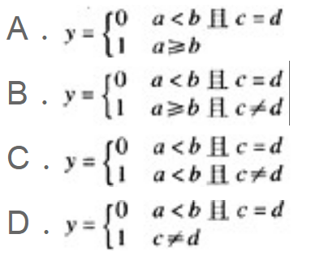

（（1）—（10）每题2分，（11）—（50）每题1分，共60分）
下列各题A）、B）、C）、D）四个选项中，只有一个选项是正确的，请将正确选项涂写在答题卡相应位置上，答在试卷上不得分。
A）程序设计就是编制程序
B）程序的测试必须由程序员自己去完成
C）程序经调试改错后还应进行再测试
D）程序经调试改错后不必进行再测试
A）顺序存储的有序线性表
B）线性链表
C）二叉链表
D）有序线性链表
A）在栈中只能插入元素而不能删除元素
B）在栈中只能删除元素而不能插入元素
C）栈是特殊的线性表，只能在一端插入或删除元素
D）栈是特殊的线性表，只能在一端插入元素，而在另一端删除元素
A）一个逻辑数据结构只能有一种存储结构
B）数据的逻辑结构属于线性结构，存储结构属于非线性结构
C）一个逻辑数据结构可以有多种存储结构，且各种存储结构不影响数据处理的效率
D）一个逻辑数据结构可以有多种存储结构，且各种存储结构影响数据处理的效率
A）软件工程只是解决软件项目的管理问题
B）软件工程主要解决软件产品的生产率问题
C）软件工程的主要思想是强调在软件开发过程中需要应用工程化原则
D）软件工程只是解决软件开发中的技术问题
A）PDL(过程设计语言)
B）PAD图
C）N-S图
D）DFD图
A）软件交付使用后还需要进行维护
B）软件一旦交付使用就不需要再进行维护
C）软件交付使用后其生命周期就结束
D）软件维护是指修复程序中被破坏的指令
A）数据共享问题
B）数据安全问题
C）大量数据存储问题
D）简化数据维护
R S T
A B C A B C A B C
1 1 2 3 1 3 1 1 2
2 2 3 2 2 3
3 1 3
则下列操作中正确的是（B）。
A）T＝R∩S
B）T＝R∪S
C）T＝R×S
D）T＝R/S
A）数据模型
B）数据库管理系统
C）数据库
D）数据库管理员
A）用户所定义的标识符允许使用关键字
B）用户所定义的标识符应尽量做到“见名知意”
C）用户所定义的标识符必须以字母或下划线开头
D）用户定义的标识符中，大、小写字母代表不同标识
A）C语句必须以分号结束
B）复合语句在语法上被看作一条语句
C）空语句出现在任何位置都不会影响程序运行
D）赋值表达式末尾加分号就构成赋值语句
A）调用printf函数时，必须要有输出项
B）使用putchar函数时，必须在之前包含头文件stdio.h
C）在C语言中，整数可以以十二进制、八进制或十六进制的形式输出
D）调用getchar函数读入字符时，可以从键盘上输入字符所对应的ASCII码
A）每个函数都可以被其它函数调用（包括main函数）
B）每个函数都可以被单独编译
C）每个函数都可以单独运行
D）在一个函数内部可以定义另一个函数
A）定义line是一个数组，每个数组元素是一个基类型为char的指针变量
B）定义line是一个指针变量，该变量可以指向一个长度为5的字符型数组
C）定义line是一个指针数组，语句中的*号称为间址运算符
D）定义line是一个指向字符型函数的指针
typedef struct NODE
{
int num;
struct NODE *next;
} OLD;
以下叙述中正确的是（C）。
A）以上的说明形式非法
B）NODE是一个结构体类型
C）OLD是一个结构体类型
D）OLD是一个结构体变量
A）C语言中对二进制文件的访问速度比文本文件快
B）C语言中，随机文件以二进制代码形式存储数据
C）语句 FILE fp; 定义了一个名为fp的文件指针
D）C语言中的文本文件以ASCII码形式存储数据
A）k%2
B）k%2==1
C）(k%2)!=0
D）!k%2==1
A）1/3*sin(1/2)*sin(1/2)
B）sin(0.5)*sin(0.5)/3
C）pow(sin(0.5),2)/3
D）1/3.0*pow(sin(1.0/2),2)
A）int n1=n2=10; B）char c=32; C）float f=f+1.1; D）double x=12.3E2.5;
main()
/* Beginning */
{
int r; float s;
scanf("%d",&r);
s=*p*r*r;
printf("s=%f\n",s);
}
出错的原因是（D）。
A）注释语句书写位置错误
B）存放圆半径的变量r不应该定义为整型
C）输出语句中格式描述符非法
D）计算圆面积的赋值语句中使用了非法变量
A）k=k>=k
B）-k++
C）k%int(f)
D）k>=f>=m
A）(!a==1)&&(!b==0)
B）(a＞b)&&! c||1
C）a && b
D）a||(b+b)&&(c-a)
int k=0,a=1,b=2,c=3; k=a<c?c:k;
执行该程序段后，k的值是（B）。
A）3 B）2 C）1
D）0
if(a<b)
if(c==d)
y=0;
else y=1;
该语句所表示的含义是（）。

int n,t=1,s=0;
scanf("%d",&n);
do{
s=s+t;
t=t-2;
}while(t!=n);
为使此程序段不陷入死循环，从键盘输入的数据应该是（D）。
A）任意正奇数
B）任意负偶数
C）任意正偶数
D）任意负奇数
A） f=0; B） f=1;
for(i=1;i<=n;i++)f*=i; for(i=1;i>=2;i--)
C） f=1; D） f=1;
for(i=n;i>1;i++) f*=i; for(i=n;i>=2;i--)
A）*p=*q;
B）p=q;
C）*p=&n1;
D）p=*q;
A）随机值
B）0
C）x的地址
D）p的地址
void fun(char ch, float x ) { … }
则以下对函数fun的调用语句中，正确的是（D）。
A）fun("abc",3.0);
B）t=fun('D',16.5);
C）fun('65',2.8);
D）fun(32,32);
main()
{
int a[10]={1,2,3,4,5,6,7,8,9,10}, *p=&a[3], *q=p+2;
printf("%d\n", *p + *q);
}
程序运行后的输出结果是（B）。
A）16
B）10
C）8
D）6
main()
{
char p[]={'a', 'b', 'c'}, q[]="abc";
printf("%d %d\n", sizeof(p),sizeof(q));
};
程序运行后的输出结果是（C）。
A）4 4
B）3 3
C）3 4
D）4 3
#define f(x) (x*x)
main()
{
int i1, i2;
i1=f(8)/f(4) ;
i2=f(4+4)/f(2+2) ;
printf("%d, %d\n",i1,i2);
}
程序运行后的输出结果是（C）。
A）64, 28
B）4, 4
C）4, 3
D）64, 64
main()
{
char a1='M', a2='m';
printf("%c\n", (a1, a2) );
}
以下叙述中正确的是（B）。
A）程序输出大写字母M
B）程序输出小写字母m
C）格式说明符不足，编译出错
D）程序运行时产生出错信息
#include<stdio.h>
main()
{
char c1='1',c2='2';
c1=getchar(); c2=getchar();
putchar(c1); putchar(c2);
}
当运行时输入：a<回车> 后，以下叙述正确的是（A）。
A）变量c1被赋予字符a，c2被赋予回车符
B）程序将等待用户输入第2个字符
C）变量c1被赋予字符a，c2中仍是原有字符2
D）变量c1被赋予字符a，c2中将无确定值
main()
{
int k=5,n=0;
while(k>0)
{
switch(k)
{
default : break;
case 1 : n+=k;
case 2 :
case 3 : n+=k;
}
k--;
}
printf("%d\n",n);
}
程序运行后的输出结果是（D）。
A）0
B）4
C）6
D）7
main()
{
int a[]={2,4,6,8,10}, y=0, x, *p;
p=&a[1];
for(x= 1; x<3; x++)
y += p[x];
printf("%d\n",y);
}
程序运行后的输出结果是（C）。
A）10
B）11
C）14
D）15
void sort(int a[], int n)
{
int i, j ,t;
for(i=0;i<n-1;i++)
for(j=i+1;j<n;j++)
if(a[i]<a[j])
{
t=a[i];a[i]=a[j];a[j]=t;
}
}
main()
{
int aa[10]={1,2,3,4,5,6,7,8,9,10}, i;
sort(aa+2, 5);
for(i=0; i<10; i++)
printf("%d,",aa[i]);
printf("\n");
}
程序运行后的输出结果是（C）。
A）1,2,3,4,5,6,7,8,9,10,
B）1,2,7,6,3,4,5,8,9,10,
C）1,2,7,6,5,4,3,8,9,10,
D）1,2,9,8,7,6,5,4,3,10,
void sum(int a[])
{
a[0] = a[-1]+a[1];
}
main()
{
int a[10]={1,2,3,4,5,6,7,8,9,10};
sum(&a[2]);
printf("%d\n", a[2]);
}
程序运行后的输出结果是（A）。
A）6
B）7
C）5
D）8
void swap1(int c0[], int c1[])
{
int t ;
t=c0[0]; c0[0]=c1[0]; c1[0]=t;
}
void swap2(int *c0, int *c1)
{
int t;
t=*c0; *c0=*c1; *c1=t;
}
main()
{
int a[2]={3,5}, b[2]={3,5};
swap1(a, a+1); swap2(&b[0], &b[1]);
printf("%d %d %d %d\n",a[0],a[1],b[0],b[1]);
}
程序运行后的输出结果是（D）。
A）3 5 5 3
B）5 3 3 5
C）3 5 3 5
D）5 3 5 3
#include<stdio.h>
#include<string.h>
main()
{
char p[]={'a', 'b', 'c'}, q[10]={'a', 'b', 'c'};
printf("%d %d\n", strlen(p), strlen(q));
}
以下叙述中正确的是（B）。
A）在给p和q数组置初值时，系统会自动添加字符串结束符，故输出的长度都为3
B）由于p数组中没有字符串结束符，长度不能确定；但q数组中字符串长度为3
C）由于q数组中没有字符串结束符，长度不能确定；但p数组中字符串长度为3
D）由于p和q数组中都没有字符串结束符，故长度都不能确定
#include <stdio.h>
#include <string.h>
void f(char *p[],int n)
{
char *t;int i,j;
for(i=0;i<n-1;i++)
for(j=i+1;j<n;j++)
if(strcmp(p[i],p[j])>0)
{
t=p[i];
p[i]=p[j];
p[j]=t;
}
}
main()
{
char *p[5]={"abc","aabdfg","abbd","dcdbe","cd"};
f(p, 5);
printf("%d\n", strlen(p[1]));
}
程序运行后的输出结果是（D）。
A）2
B）3
C）6
D）4
#include<stdio.h>
void f(char *s, char *t)
{
char k;
k=*s; *s=*t; *t=k;
s++; t--;
if(*s)
f(s, t);
}
main()
{
char str[10]="abcdefg", *p ;
p=str+strlen(str)/2+1;
f(p, p-2);
printf("%s\n",str);
}
程序运行后的输出结果是（B）。
A）abcdefg
B）gfedcba
C）gbcdefa
D）abedcfg
float f1(float n)
{
return n*n; }
float f2(float n)
{
return 2*n; }
main()
{
float (*p1)(float),(*p2)(float),(*t)(float), y1, y2;
p1=f1; p2=f2;
y1=p2( p1(2.0) );
t = p1; p1=p2; p2 = t;
y2=p2( p1(2.0) );
printf("%3.0f, %3.0f\n",y1,y2);
}
程序运行后的输出结果是（A）。
A）8, 16
B）8, 8
C）16, 16
D）4, 8
int a=2;
int f(int n)
{
static int a=3;
int t=0;
if(n%2){ static int a=4; t += a++; }
else { static int a=5; t += a++; }
return t+a++;
}
main()
{
int s=a, i;
for( i=0; i<3; i++)
s+=f(i);
printf("%d\n", s);
}
程序运行后的输出结果是（C）。
A）26
B）28
C）29
D）24
#include<stdio.h>
struct STU
{
int num;
float TotalScore;
};
void f(struct STU p)
{
struct STU s[2]={{20044,550},{20045,537}};
p.num = s[1].num; p.TotalScore = s[1].TotalScore;
}
main()
{
struct STU s[2]={{20041,703},{20042,580}};
f(s[0]);
printf("%d %3.0f\n", s[0].num, s[0].TotalScore);
}
程序运行后的输出结果是（D）。
A）20045 537
B）20044 550
C）20042 580
D）20041 703
#include<stdio.h>
struct STU
{
char name[10];
int num;
};
void f(char *name, int num)
{
struct STU s[2]={{"SunDan",20044},{"Penghua",20045}};
num = s[0].num;
strcpy(name, s[0].name);
}
main()
{
struct STU s[2]={{"YangSan",20041},{"LiSiGuo",20042}},*p;
p=&s[1]; f(p->name, p->num);
printf("%s %d\n", p->name, p->num);
}
程序运行后的输出结果是（A）。
A）SunDan 20042
B）SunDan 20044
C）LiSiGuo 20042
D）YangSan 20041
struct STU
{
char name[10];
int num;
float TotalScore;
};
void f(struct STU *p)
{
struct STU s[2]={{"SunDan",20044,550},{"Penghua",20045,537}}, *q=s;
++p ; ++q; *p=*q;
}
main()
{
struct STU s[3]={{"YangSan",20041,703},{"LiSiGuo",20042,580}};
f(s);
printf("%s %d %3.0f\n", s[1].name, s[1].num, s[1].TotalScore);
}
程序运行后的输出结果是（B）。
A）SunDan 20044 550
B）Penghua 20045 537
C）LiSiGuo 20042 580
D）SunDan 20041 703
main()
{
unsigned char a, b;
a=7^3; b= ~4 & 3;
printf("%d %d\n",a,b);
}
程序运行后的输出结果是（A）。
A）4 3
B）7 3
C）7 0
D）4 0
#include<stdio.h>
main()
{
FILE *fp; int i, k, n;
fp=fopen("data.dat", "w+");
for(i=1; i<6; i++)
{
fprintf(fp,"%d ",i);
if(i%3==0)
fprintf(fp,"\n");
}
rewind(fp);
fscanf(fp, "%d%d", &k, &n);
printf("%d %d\n", k, n);
fclose(fp);
}
程序运行后的输出结果是（D）。
A）0 0
B）123 45
C）1 4
D）1 2
请将每一个空的正确答案写在答题卡【1】至【20】序号的横线上，答在试卷上不得分。
（1）数据管理技术发展过程经过人工管理、文件系统和数据库系统三个阶段，其中数据独立性最高的阶段是 【数据库系统】 。
（2）算法复杂度主要包括时间复杂度和 【空间】 复杂度。
（3）在进行模块测试时，要为每个被测试的模块另外设计两类模块：驱动模块和承接模块（桩模块）。其中 【驱动模块】 的作用是将测试数据传送给被测试的模块，并显示被测试模块所产生的结果。
（4）一棵二叉树第六层（根结点为第一层）的结点数最多为 【32】 个。(2^(n-1))
（5）数据结构分为逻辑结构和存储结构，循环队列属于 【存储】 结构。
（6）以下程序运行后的输出结果是 【88】 。
main()
{
int x=0210;
printf("%X\n",x);
}
（7）以下程序运行后的输出结果是 【1】 。
main()
{
int a=1,b=2,c=3;
if(c=a)
printf("%d\n",c);
else
printf("%d\n",b);
}
（8）已有定义：double *p;，请写出完整的语句，利用malloc函数使p指向一个双精度型 的动态存储单元 【p=(double*)malloc(sizeof(double));】 。
（9）以下程序运行后的输出结果是 【2 20.000000】 。
main()
{
char c; int n=100;
float f=10; double x;
x=f*=n/=(c=50);
printf("%d %f\n",n,x);
}
（10）以下程序的功能是计算：s=1+12+123+1234+12345。请填空。
main()
{
int t=0,s=0,i;
for( i=1; i<=5; i++)
{
t=i+ 【t*10】 ; s=s+t; }
printf("s=%d\n",s);
}
（11）已知字母A的ASCII码为65。以下程序运行后的输出结果是 【67 G】 。
main()
{
char a, b;
a='A'+'5'-'3';
b=a+'6'-'2' ;
printf("%d %c\n", a, b);
}
（12）有以下程序
int sub(int n) { return (n/10+n%10); }
main()
{
int x,y;
scanf("%d",&x);
y=sub(sub(sub(x)));
printf("%d\n",y);
}
若运行时输入：1234<回车>，程序的输出结果是 【10】 。
（13）以下函数sstrcat()的功能是实现字符串的连接，即将t所指字符串复制到s所指字符串的尾部。例如：s所指字符串为abcd，t所指字符串为efgh，函数调用后s所指字符串为abcdefgh。请填空。
#include<string.h>
void sstrcat(char *s, char *t)
{
int n;
n= strlen(s);
while(*(s+n)= 【*t】 ){
s++; t++;}
}
（14）以下程序运行后的输出结果是 【bcdefgha】 。
#include<stdio.h>
char *ss(char *s)
{
char *p, t;
p=s+1; t=*s;
while(*p) {
*(p-1) = *p;
p++;
}
*(p-1)=t;
return s;
}
main()
{
char *p, str[10]="abcdefgh";
p = ss(str) ;
printf("%s\n",p);
}
（15）以下程序运行后的输出结果是【15】。
int f(int a[], int n)
{
if(n >= 1)
return f(a, n-1)+a[n-1];
else
return 0;
}
main()
{
int aa[5]={1,2,3,4,5}, s;
s=f(aa, 5);
printf("%d\n", s);
}
（16）以下程序运行后的输出结果是 【5】 。
struct NODE
{
int num;
struct NODE *next;
} ;
main()
{
struct NODE s[3]={{1, '\0'},{2, '\0'},{3, '\0'}}, *p, *q, *r;
int sum=0;
s[0].next=s+1; s[1].next=s+2; s[2].next=s;
p=s; q=p->next; r=q->next;
sum+=q->next->num; sum+=r->next->next->num;
printf("%d\n", sum);
}
（17）以下程序的功能是输出如下形式的方阵：
13 14 15 16 9 10 11 12 5 6 7 8 1 2 3 4
请填空。
main()
{
int i,j,x;
for(j=4; j 【>0】 ; j--)
{
for(i=1; i<=4; i++)
{
x=(j-1)*4 + 【6】 ;
printf("%4d",x);
}
printf("\n");
}
}
（18）以下函数rotate的功能是：将a所指N行N列的二维数组中的最后一行放到b所指二维数组的第0列中，把a所指二维数组中的第0行放到b所指二维数组的最后一列中，b所指二维数组中其他数据不变。
#define N 4
void rotate(int a[][N], int b[][N])
{
int i, j;
for(i=0; i{
b[i][N-1] = 【a[0][i]】;
【b[i][0]】 = a[N-1][i]; }
}
本页共719段，24021个字符，31498 Byte(字节)